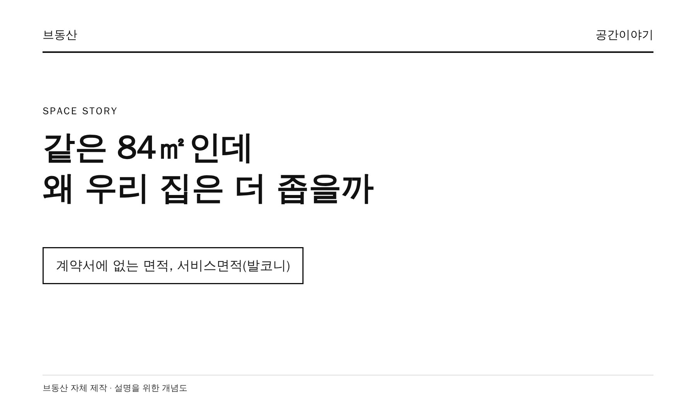
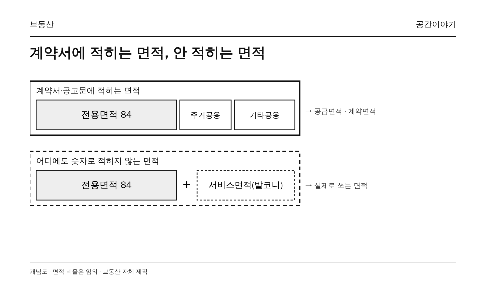
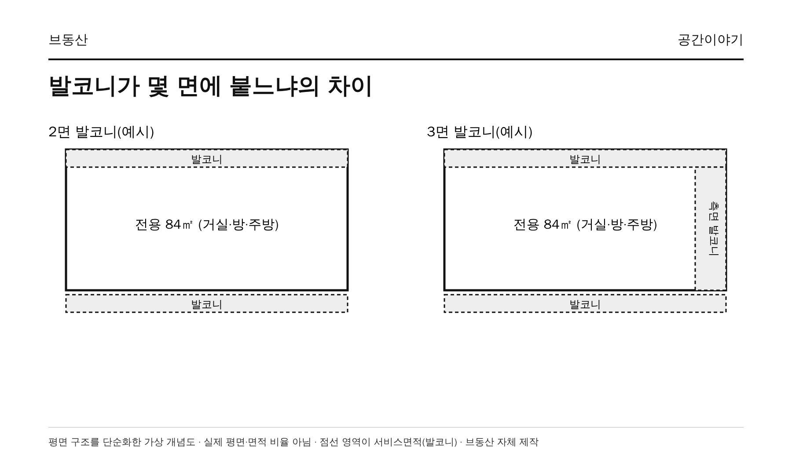
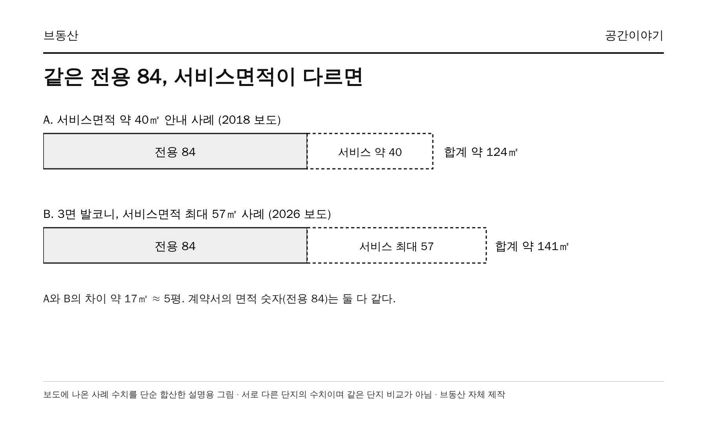

같은 84㎡라는데 친구 집에 가면 왜 더 넓게 느껴질까? 이유는 가구도, 인테리어도 아닌 계약서에 적히지 않는 면적에 있었다.
1. 계약서에는 ‘전용 84, 공급 11x’만 적힌다
분양 공고문과 계약서에서 우리가 보는 면적은 전용면적, 공급면적, 계약면적이다. 전용면적은 세대 안에서 우리 가족이 독점해서 쓰는 면적이고, 공급면적은 여기에 계단·복도 같은 주거공용면적을 더한 값이다. 계약면적은 공급면적에 지하주차장 등 기타공용면적까지 더한 값이다.
이 세 숫자 어디에도 발코니는 없다. 발코니는 전용면적에서 빠지고, 공급·계약면적에도 들어가지 않는다. 이 면적을 업계에서는 서비스면적이라 부른다. 이코노미스트의 2018년 기사는 서비스면적을 “분양계약서 어디에도 나타나지 않는 면적”이라고 설명한다.

그래서 실제로 우리가 쓰는 면적은 전용 84 + 서비스면적(발코니)인데, 이 합계는 계약서 어디에서도 확인할 수 없다.
2. 발코니는 왜 면적에서 빠질까
건축법 시행령은 발코니를 건축물의 내부와 외부를 잇는 완충공간으로 정의하고, 기준에 맞는 주택의 발코니는 거실·침실·창고 등으로 쓸 수 있게 허용한다. 바닥면적을 셀 때는 발코니 같은 노대 면적에서 가장 긴 외벽 길이에 1.5m를 곱한 만큼을 빼서 계산한다. 자세한 산식은 우리 집 베란다는 어디로 사라졌을까에서 다뤘다.
핵심은 발코니가 계약서의 면적 항목이 아니라는 점이다. 확장하면 방이나 거실처럼 쓸 수 있는데도 전용면적이 늘어나지는 않는다. 그래서 같은 전용 84㎡라도 발코니가 얼마나 있느냐에 따라 실제 쓰는 면적이 달라지고, 그 차이는 계약서의 숫자로는 비교되지 않는다.
3. 건설사가 발코니를 얼마나 확보하느냐
발코니 면적은 평면 설계가 정한다. 전면과 후면에만 발코니가 붙는 2면 구조가 있고, 여기에 측면을 하나 더해 발코니를 최대한 확보하는 3면 구조가 있다. 아파트 전면의 기둥과 기둥 사이를 뜻하는 베이(Bay) 수를 늘려도 집이 가로로 길어져 발코니 면적이 커진다. 이코노미스트는 베이 수를 늘리는 평면에는 설계 노하우가 필요하다고 짚었다.

데일리안은 2026년 8월 기사에서 3면 발코니를 적용하면 2면 구조보다 서비스면적이 더 많이 나온다고 설명했다. 같은 ‘84’라는 이름을 달고 있어도 설계에서부터 사는 공간이 달라지는 것이다.
4. 숫자로 보면 얼마나 다를까
기사에 나온 사례 수치를 모아 보면 다음과 같다.
- 분양 상담에서 “84㎡형은 서비스면적만 40㎡ 정도”라는 설명을 들을 수 있다(이코노미스트, 2018).
- 동탄2신도시 KCC스위첸 84㎡형 B타입은 서비스면적이 50.5㎡로 전용면적의 60% 수준이라고 소개됐다(이코노미스트, 2018). 같은 기사는 대개 전용면적의 30~50%를 서비스면적으로 받을 수 있다고 정리했다.
- 고양 킨텍스 원시티 2블록의 3면 발코니 일부 84㎡ 타입은 서비스면적이 최대 57㎡(약 17평)이고, 광주 챔피언스시티 1차의 84㎡는 최대 54.39㎡(약 16평)라고 보도됐다(데일리안, 2026.8).

단순 합산하면 서비스면적 40㎡ 사례는 약 124㎡, 57㎡ 사례는 약 141㎡다. 둘 다 계약서에는 ‘전용 84’로 적히지만 사는 면적은 약 17㎡, 평수로 5평쯤 차이가 난다. 3면 발코니의 84가 넓어 보이는 것이 아니라 실제로 더 넓다는 뜻이다.
다만 이 수치는 분양 측 설명이 섞인 보도 사례이고 단지마다 다르다. 발코니가 전부 거실이나 방이 되는 것도 아니다. 대피공간이나 실외기실처럼 확장할 수 없는 부분은 남는다. 확장한 이후 기준의 최대치로 이해하는 편이 정확하다.
5. 서비스면적은 정말 공짜일까
면적 기준으로는 공짜처럼 보이지만 이코노미스트는 서비스면적의 비용이 분양가와 발코니 확장비에 사실상 반영된다고 설명한다. 발코니 확장비는 84㎡형 기준 800만~1,300만원 정도로 소개됐는데, 2018년 기사 수치라 현재 금액은 단지별 공고문에서 확인해야 한다.
하나금융연구소의 2023년 보고서 「발코니의 경제학」은 발코니 면적을 15㎡에서 45㎡로 늘리면 집의 가치가 약 1억 4,500만원 오르는 효과가 있다고 추정했다(데일리안 인용). 서비스면적이 공짜가 아니라 값어치가 있는 면적이라는 시각이다.
6. 청약 전에 확인할 것
공고문의 면적표에는 서비스면적이 나오지 않는 경우가 많다. 그래서 다음 순서로 직접 확인하자.
- 같은 84 타입이 2면인지 3면(또는 4Bay)인지 공식 평면도에서 확인한다.
- 분양 홈페이지와 카탈로그에 서비스면적이 표기돼 있는지, 없다면 시행사에 문의한다.
- 발코니 확장비와 확장 가능 범위, 확장할 수 없는 공간(대피공간·실외기실)을 확인한다.
같은 84를 비교할 때는 전용면적 옆에 서비스면적을 함께 적어 두고 보면 비교가 한결 정확해진다.
결론: 계약서의 84 말고 실제 쓰는 면적을 보자
전용 84는 같아도 발코니를 얼마나 확보했느냐에 따라 실제 쓰는 면적은 다르다. 그 차이는 계약서 어디에도 적히지 않아 대부분이 모르고 지나간다. 다음에 84㎡ 평면도를 볼 때는 전용 숫자 옆에 서비스면적이 얼마인지부터 확인해 보자.